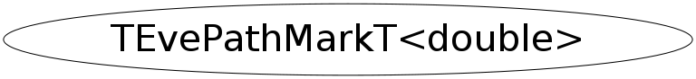

class TEvePathMarkT<double>
TEvePathMark
This class is also known as (typedefs to this class)
TEvePathMarkD, TEvePathMarkT<Double_t>Function Members (Methods)
public:
| TEvePathMarkT<double>(TEvePathMarkT<double>::EType_e type = kReference) | |
| TEvePathMarkT<double>(const TEvePathMarkT<double>&) | |
| TEvePathMarkT<double>(TEvePathMarkT<double>::EType_e type, const TEveVectorT<double>& v, double time = 0) | |
| TEvePathMarkT<double>(TEvePathMarkT<double>::EType_e type, const TEveVectorT<double>& v, const TEveVectorT<double>& p, double time = 0) | |
| TEvePathMarkT<double>(TEvePathMarkT<double>::EType_e type, const TEveVectorT<double>& v, const TEveVectorT<double>& p, const TEveVectorT<double>& e, double time = 0) | |
| ~TEvePathMarkT<double>() | |
| static TClass* | Class() |
| TClass* | IsA() const |
| TEvePathMarkT<double>& | operator=(const TEvePathMarkT<double>&) |
| void | ShowMembers(TMemberInspector& insp) |
| void | Streamer(TBuffer& b) |
| void | StreamerNVirtual(TBuffer& b) |
| const char* | TypeName() |
Data Members
public:
| TEveVectorT<double> | fE | Extra, meaning depends on fType. |
| TEveVectorT<double> | fP | Momentum. |
| double | fTime | Time. |
| TEvePathMarkT<double>::EType_e | fType | Mark-type. |
| TEveVectorT<double> | fV | Vertex. |
Class Charts
{kind=link}
{kind=link}
{kind=link}
{kind=link}
